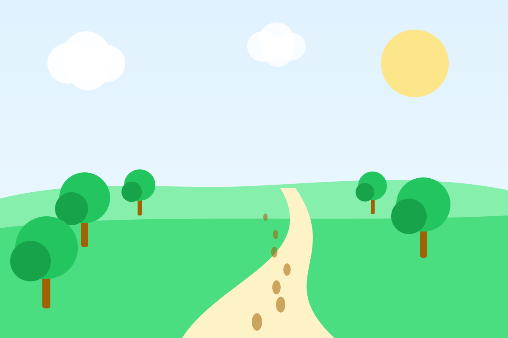

Ходьба: самая недооценённая тренировка
Ходьба не требует абонемента, формы и особых навыков, а пользы от неё больше, чем кажется. Разбираемся, сколько шагов действительно нужно, как ходить с пользой и как незаметно добавить движения в обычный день.

Почему ходьба — это серьёзно
Быстрая ходьба — это полноценная аэробная нагрузка умеренной интенсивности. Именно такую активность ВОЗ рекомендует взрослым: 150–300 минут в неделю. Регулярная ходьба:
- тренирует сердце и сосуды и помогает держать в норме давление;
- улучшает чувствительность к инсулину — особенно прогулки после еды;
- укрепляет кости и мышцы ног, поддерживает равновесие;
- снижает тревогу и улучшает настроение — на свежем воздухе эффект заметнее;
- почти не даёт травм, поэтому подходит людям любого возраста и уровня подготовки.
10 000 шагов — это обязательно?
Нет. Цифра 10 000 появилась в 1960-х годах в Японии как название шагомера и красивое круглое число, а не как научный вывод. Исследования с тех пор показали более гибкую картину.
В большом анализе 15 исследований почти 50 тысяч взрослых риск преждевременной смерти снижался по мере роста числа шагов, а затем выходил на плато: у людей старше 60 лет — примерно на 6–8 тысячах шагов в день, у людей моложе 60 — на 8–10 тысячах.
Калькулятор шагов
Сколько это — в километрах и минутах?
≈ 5,6 км · ≈ 1 ч 20 мин ходьбы
Длина шага принята за 41% роста, темп — 100 шагов в минуту, расход энергии — как у ходьбы около 5 км/ч. Это ориентир: у всех свои шаг, темп и обмен веществ.
Как понять, что идёте достаточно быстро
Для пользы сердцу темп должен быть бодрым. Простые ориентиры:
- около 100 шагов в минуту — порог умеренной интенсивности для большинства взрослых. Посчитайте шаги за 15 секунд и умножьте на четыре: если получилось 100 и больше, вы на верном пути;
- разговорный тест: говорить можно, а петь уже не получается;
- дыхание чуть учащается, становится тепло.
Техника: как ходить, чтобы было удобно
- Держите голову прямо и смотрите вперёд, а не под ноги.
- Плечи расслаблены, руки согнуты в локтях и свободно двигаются в такт шагам.
- Ставьте стопу с пятки и перекатывайтесь на носок.
- Не делайте слишком длинных шагов: для скорости лучше чаще перебирать ногами.
- Обувь — удобная, по размеру, с гибкой подошвой. Каблуки и шлёпанцы для долгих прогулок не подходят.
Двадцать способов добавить шагов
- Выходите на одну остановку раньше.
- Ходите по лестнице хотя бы на 2–3 этажа.
- Разговаривайте по телефону стоя и на ходу.
- Гуляйте 10 минут после обеда и ужина.
- Паркуйтесь подальше от входа.
- Ходите в ближайший магазин пешком.
- Назначайте встречи с друзьями на прогулке, а не в кафе.
- Устраивайте «пеший» перерыв каждые 45–60 минут работы.
- Берите воду в маленькой бутылке — придётся чаще вставать за добавкой.
- Слушайте подкасты и аудиокниги только на прогулке.
- Выгуливайте собаку чуть дольше обычного — ей тоже понравится.
- Выбирайте маршрут через парк, даже если он немного длиннее.
- Пока греется чайник — пройдитесь по квартире.
- Провожайте гостей до остановки.
- Ходите на детскую площадку вместе с ребёнком, а не только сидите на скамейке.
- Утром сделайте короткую прогулку до начала дел.
- В выходные выбирайтесь на пешие маршруты за город.
- Ставьте себе цель на неделю, а не на день — так легче компенсировать загруженные дни.
- Ходите с друзьями: вместе проще не пропускать.
- Отслеживайте шаги в телефоне или часах — видимый прогресс мотивирует.
Безопасность
- В темноте надевайте одежду со светоотражающими элементами.
- В жару гуляйте утром или вечером и берите воду.
- Зимой выбирайте обувь с нескользкой подошвой.
- Если при ходьбе появляются боль в груди, одышка не по нагрузке или головокружение — остановитесь и обратитесь к врачу.